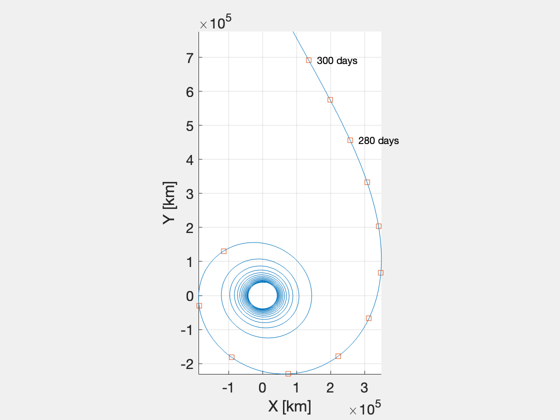
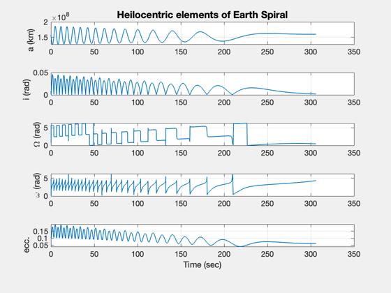
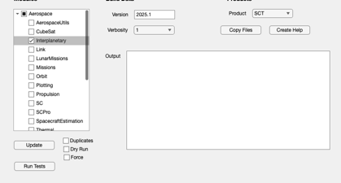
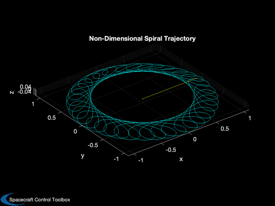
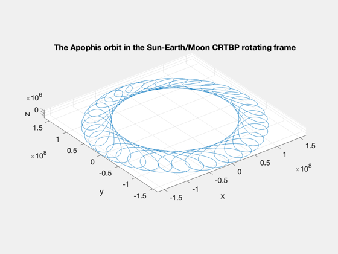
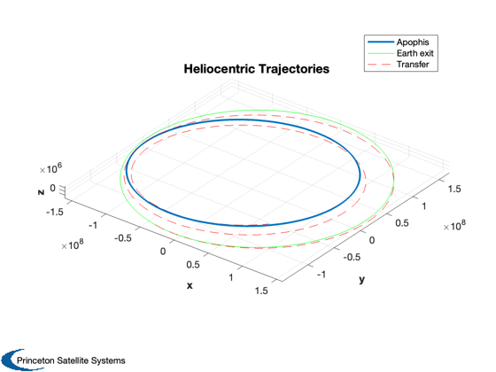
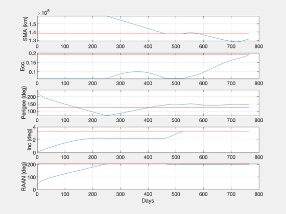
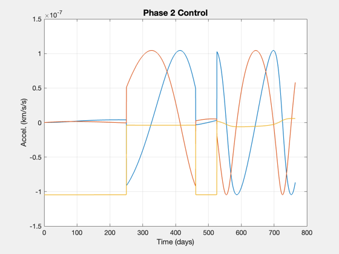
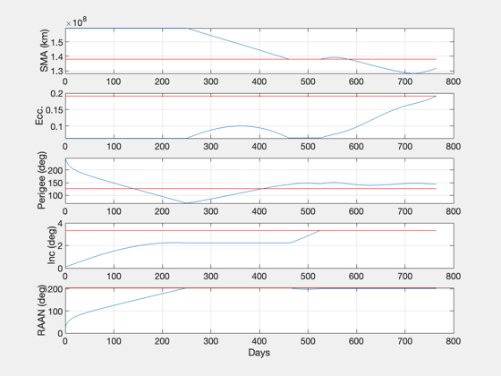
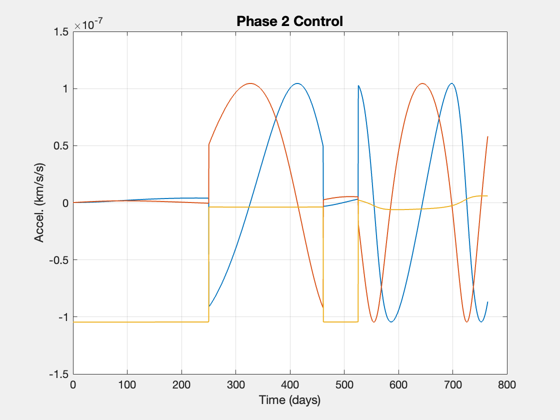

Contents
Asteroid Prospector Simulation
Simulate the Asteroid Prospector mission starting with a spiral out from Earth and performing a rendezvous with Apophis. Try different departure orbits to see the effect on the spiral portion of the orbit. The low-thrust rendezvous corrects each Keplerian orbital element sequentially.
See also TransformECIToSEMR, SunEarthMoonSystemConstants, FCRTBPRHS, LowThrustCRTBP_StopFcn, SEMRToSEMI, SEMToSEMND, LowThrustDVToTransfer, LowThrustRendezvousSim
%-------------------------------------------------------------------------- % Copyright (c) Princeton Satellite Systems, Inc. % All rights reserved. %--------------------------------------------------------------------------
Set up mission data
% CONSTANTS d = SunEarthMoonSystemConstants; % Spacecraft Parameters g = 9.806e-3; % km/s^2 mass0 = 20; % mass (kg) thrust = 1.9 * 1e-6; % thrust (kN) Isp = 2800; % specific impulse (sec) uE = g*Isp; % exhaust velocity (km/s) % Initial parking altitude hParking = 35789; % 850; LEO % 20200; GPS % 35789 % GEO % Initial State in ECI and SEM Rotating Frame %--------------------------------------------- offset = 7; jD0 = Date2JD([2012 8 1 12 0 0]) + offset; sma = d.Re + hParking; inc = 0*pi/180; % Inclination ... Use 21 deg to match lunar inc raan = 348*pi/180; % Right ascension ... Use 348 deg to match lunar raan ecc = 0.0; % eccentricity meanAnom = pi/2; % mean anomaly el0 = [sma, inc, raan, 0, ecc, meanAnom]; [rECI,vECI] = El2RV(el0,d.muEarth); % Now transform from ECI to SEM rotating frame %--------------------------------------------- [rSEMR0,vSEMR0] = TransformECIToSEMR(jD0,rECI,vECI); rSEMRND0 = rSEMR0/d.L; vSEMRND0 = vSEMR0/(d.L/d.T*2*pi);
Simulate spiral out from Earth.
This accounts for the change in mass as fuel is consumed. The values are converted to non-dimensional units. T is an Earth year and L is 1 AU.
%---------------------------------------------------------- thrustND = thrust / (d.L*2*pi) * d.T * d.T; uEND = uE / (d.L*2*pi) * d.T; afun = @(y) thrustND*Unit(y(4:6))/y(7); % acceleration function rhs = @(t,y) FCRTBPRHS(y,t,d.mu,afun(y),uEND); options = odeset('RelTol',1e-12,'AbsTol',1e-14); % Stopping conditions %-------------------- rho = d.muEarth/d.muSun; xB = rho*d.L/(d.muSun + d.muEarth); xE = d.L - xB; xS = -xB; clear dStop; dStop.muEarth = d.muEarth; dStop.muSun = d.muSun; dStop.L = d.L; dStop.rE = [xE;0;0]; dStop.rS = [xS;0;0]; dStop.ratio = 10; % The ratio of solar gravity to earth gravity % Stop once sun gravity accel dominates that of Earth %---------------------------------------------------- options = odeset(options,'events',@(t,x) LowThrustCRTBP_StopFcn(t,x,dStop),... 'outputfcn',@ODETimeDisplay); [t1,y1] = ode113(rhs,[0 2],[rSEMRND0;vSEMRND0;mass0],options); t1d = t1*d.T/86400; % time in days rSEMRND = y1(:,1:3)'; vSEMRND = y1(:,4:6)'; mass = y1(:,7); rSEMR = rSEMRND*d.L; vSEMR = vSEMRND*d.L*2*pi/d.T; jD = jD0+t1d'; % Transform position and velocity vectors into the heliocentric frame %--------------------------------------------------------------------- [rSEMI,vSEMI,m] = SEMRToSEMI( jD, rSEMR, vSEMR ); elHelio = zeros(length(t1),6); for i=1:length(t1) elHelio(i,:) = RV2El(rSEMI(:,i), vSEMI(:,i), d.muSun); end elHelioExit = elHelio(i,:); % Plots %------ NewFig('Low thrust spiral') plot3(rSEMR(1,:)-d.L,rSEMR(2,:),rSEMR(3,:)) axis equal set(gca,'fontsize',14) xlabel('X [km]') ylabel('Y [km]') view(0,90) hold on % add markers every 10 days for last 100 days t1dd = 0:floor(t1d(end)); tdEnd = floor(t1dd(end)/10)*10; rd = interp1(t1d,rSEMR',t1dd)'; days0 = tdEnd-110; days10 = days0:10:tdEnd; plot3(rd(1,days10)-d.L,rd(2,days10),rd(3,days10),'s') text(rd(1,days10(end))-d.L,rd(2,days10(end)),rd(3,days10(end)),... sprintf(' %d days',days10(end))); text(rd(1,days10(end-2))-d.L,rd(2,days10(end-2)),rd(3,days10(end-2)),... sprintf(' %d days',days10(end-2))); grid on % Plot helio orbital elements of Earth spiral %-------------------------------------------- Plot2D(t1d',elHelio(:,1:5)','Time (sec)',... {'a (km)','i (rad)','\Omega (rad)','\omega (rad)','ecc.'},... 'Heilocentric elements of Earth Spiral'); % Compute time and delta-v %-------------------------- dT1 = t1(end)*d.T; dV1Tot = -uE*log( mass(end)/mass0 ); fprintf('Spiral requires %f km/s delta-V in %.0f days\n',dV1Tot,dT1/86400); % This estimate assumes point mass gravity dVSpiral = LowThrustEscape(d.muEarth,sma); fprintf('The delta-V estimate from LowThrustEscape was %f km/s.\n',dVSpiral);
Spiral requires 2.635443 km/s delta-V in 306 days The delta-V estimate from LowThrustEscape was 3.074552 km/s. 
Phase 2: Heliocentric orbit, matching Apophis elements
%-------------------------------------------------------- % This is an approximation to a true trajectory optimization, by changing one % orbital element at a time. Try changing the order of the elements. In this % particular case, [3 1 2 5] works well. The mean anomaly is not controlled as % that would be managed by selection the working start date. % Apophis orbit in heliocentric frame %------------------------------------- [elA,~,~,jDA0] = ApophisOrbit; pA = Period(elA(1),d.muSun); tA = linspace(0,pA*35,7000); jDA = jDA0+tA/86400; [rA,vA] = RVOrbGen(elA,tA,[],d.muSun); [rASEMR,vASEMR,m] = SEMIToSEMR( jDA, rA, vA ); [rASEMRND,vASEMRND] = SEMToSEMND( rASEMR, vASEMR ); % Plot spiral out traj in rotating SEMR frame (non-dim) %------------------------------------------------------ PlotSEMTraj(rSEMRND,'SEMRND') % Add ND traj of Apophis to last plot of trajectory hold on plot3(rASEMRND(1,:),rASEMRND(2,:),rASEMRND(3,:),'c') title('Non-Dimensional Spiral Trajectory','color','w') % Apophis orbit in SEMR %---------------------- NewFig('Apophis Orbit'); plot3(rASEMR(1,:),rASEMR(2,:),rASEMR(3,:)), grid on, axis equal title('The Apophis orbit in the Sun-Earth/Moon CRTBP rotating frame') xlabel('x'), ylabel('y'), zlabel('z') m02 = mass(end); % initial mass at start of phase 2 (kg) aMax = thrust/mass(end); % acceleration at start of phase 2 (km/s/s) [dT2,dT20,dT2T,elDot20,elDot2T] = ... LowThrustTimeToTransfer( elHelio(end,:), elA, aMax, d.muSun ); [dV2Tot,dV2Elem] = LowThrustDVToTransfer( dT2, mass(end), thrust, Isp ); % Low thrust rendezvous sim %--------------------------- elemOrder = [3 1 2 5]; el0 = elHelioExit; elT = elA; [t2,el2,r2,v2,mass2,acc2,accRSW2] = LowThrustRendezvousSim(el0,elT,mass(end),... thrust,Isp,elemOrder,d.muSun); t2d = t2/86400; fprintf('---- Results of element matching: ----\n'); fprintf('Total transfer time: %f days\n',t2d(end)); fprintf('Total delta-V: %f km/s\n',sum(Mag(acc2(:,1:end-1)).*diff(t2))); fprintf('Fuel consumed: %f kg\n',mass2(1)-mass2(end)); % Plots %------ rH = RVOrbGen(elHelioExit,[],[],d.muSun); hTraj = Plot3D(rA,[],[],[],'Heliocentric Trajectories'); hold on plot3(rH(1,:),rH(2,:),rH(3,:),'g') plot3(r2(1,:),r2(2,:),r2(3,:),'r--') legend('Apophis','Earth exit','Transfer','location','best') % Apophis distance to Earth %-------------------------- Plot2D(tA/d.T, Mag(rASEMRND-repmat([1;0;0],1,length(tA))), ... 'Time (yrs)','N.D. Distance','Earth-to-Apophis Distance') % Rendezvous transfer elements %----------------------------- NewFig('Orbital Elements') k=1; subplot(5,1,1) plot(t2d,el2(:,k)), hold on, grid on, zoom on, ylabel('SMA (km)') line([0 t2d(end)],[1 1]*elT(k),'color','r') k=5; subplot(5,1,2) plot(t2d,el2(:,k)), hold on, grid on, zoom on, ylabel('Ecc.') line([0 t2d(end)],[1 1]*elT(k),'color','r') k=4; subplot(5,1,3) plot(t2d,el2(:,k)*180/pi), hold on, grid on, zoom on, ylabel('Perigee (deg)') line([0 t2d(end)],[1 1]*elT(k)*180/pi,'color','r') k=2; subplot(5,1,4) plot(t2d,el2(:,k)*180/pi), hold on, grid on, zoom on, ylabel('Inc (deg)') line([0 t2d(end)],[1 1]*elT(k)*180/pi,'color','r') k=3; subplot(5,1,5) plot(t2d,el2(:,k)*180/pi), hold on, grid on, zoom on, ylabel('RAAN (deg)') line([0 t2d(end)],[1 1]*elT(k)*180/pi,'color','r') xlabel('Days') Plot2D(t2d,acc2,'Time (days)','Accel. (km/s/s)','Phase 2 Control') grid on, zoom on, Figui %-------------------------------------- % PSS internal file version information %-------------------------------------- % $Id: 4ee7a400af7d6e3ba815219efa5e8700bc21d938 $
ans =
Figure (PlotPSS) with properties:
Number: 3
Name: 'SEMRND'
Color: [0 0 0]
Position: [468 345 560 420]
Units: 'pixels'
Use GET to show all properties
Right Ascension: Estimated 178.55604 deg change over 8.9 months
Right Ascension: Actual 178.55568 deg change over 8.2 months
SMA: Estimated -21466611.62540 km change over 9.7 months
SMA: Actual -21466452.16248 km change over 6.9 months
Inclination: Estimated 3.21016 deg change over 2.5 years
Inclination: Actual 1.10717 deg change over 9.2 weeks
Eccentricity: Estimated 0.12804 change over 2.5 years
Eccentricity: Actual 0.12685 change over 7.9 months
---- Results of element matching: ----
Total transfer time: 764.510106 days
Total delta-V: 6.907269 km/s
Fuel consumed: 4.569025 kg
      
 